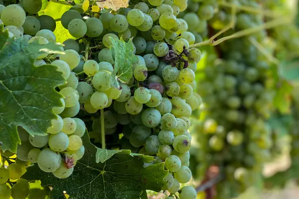

Riesling grape

Photo: Sophie Backes on Unsplash
Riesling is a white grape known for peach, lime, petrol, honey. Its best-known homes are Mosel, Alsace, Finger Lakes.
Primary flavours
- Peach
- Lime
- Petrol
- Honey
Taste profile
Origin and history
A German grape first recorded in 1435 at Rüsselsheim on the Rhine.
Where it grows
Mosel, Rheingau, Pfalz and Nahe in Germany, Alsace, Austria's Wachau, Clare and Eden Valley in Australia, the Finger Lakes and Washington State.
Structure
Light to medium body and very high acidity. Made in every style, from bone dry to intensely sweet.
Aromas, young and aged
Young: lime, lemon, green apple, white flowers and peach. With age: honey, toast and a typical petrol note.
Ageing
One of the longest-lived whites: good examples age 10–30 years, sweet ones even longer.
Also known as
Rhine Riesling, Weisser Riesling, Johannisberg Riesling.
Good to know
German Prädikat levels (Kabinett, Spätlese, Auslese, Beerenauslese, Trockenbeerenauslese) are based on grape ripeness at harvest.
Wine regions for Riesling
Riesling wines to try
Real bottles from The Wine Library.
Trimbach Riesling Clos Sainte Hune
Dry, intense Riesling: lime, white flowers and a long mineral finish.
Food: Sole, choucroute
Dr. Loosen Wehlener Sonnenuhr Riesling Kabinett
Mosel · Wehlener Sonnenuhr · Riesling
Light and off-dry: green apple, peach and racy slate acidity.
Food: Thai food, pork
Egon Müller Scharzhofberger Riesling Spätlese
Delicate and sweet: apricot, honey and electric acidity; ages for decades.
Food: Fruit desserts, blue cheese
Robert Weil Riesling Trocken
Dry Rheingau Riesling: lime, white peach and a crisp mineral finish.
Food: Trout, Asian dishes
Dr. Konstantin Frank Dry Riesling
Crisp and lively: lime, green apple, peach and a slaty finish.
Food: Oysters, Thai salads, pork
Domaine Rolly Gassmann Riesling
Ripe Alsace Riesling: citrus, peach and mineral length.
Food: Fish, choucroute
Domaines Schlumberger Riesling Grand Cru Clos Saint-Léger
Alsace · Alsace Grand Cru · Riesling
Grand cru Riesling from steep Guebwiller slopes: intense, mineral and age-worthy.
Food: Lobster, pork
Penfolds Bin 51 Riesling
Eden Valley Riesling: lime, blossom and steely acidity.
Food: Thai food, oysters
Grosset Springvale Riesling
Benchmark Clare Riesling: lime, talc and long dry finish.
Food: Asian dishes, seafood
Two Paddocks Picnic Riesling
Fresh, off-dry Central Otago Riesling: lime and apple.
Food: Spicy food, pork
Amalaya Torrontés Riesling
Salta (Cafayate) · Valles Calchaquíes · Torrontés, Riesling
High-altitude aromatic blend: flowers, citrus and freshness.
Food: Empanadas, Asian food
Weingut Leitz Eins Zwei Dry Riesling
Crisp green apple and lime with a slate-cool backbone; an easy-drinking dry Riesling that punches above its price.
Food: Thai green papaya salad
Weingut Prager Riesling Smaragd Achleiten
Ripe white peach and apricot over a stony, almost smoky core, with the weight of a Smaragd and a long, mineral finish.
Food: Roast chicken with tarragon cream
Hermann J. Wiemer Dry Riesling
Finger Lakes · Seneca Lake · Riesling
Lime zest, white flowers and wet stone, racy and precise, with only a whisper of residual sweetness.
Food: Smoked trout rillettes
Joh. Jos. Prüm Wehlener Sonnenuhr Riesling Spätlese
Feather-light and gently sweet, with peach, lime blossom and a smoky slate edge that sharpens with bottle age.
Food: Spicy Thai crab cakes, pork with apple
Georg Breuer Terra Montosa Riesling
Dry and stony Rheingau Riesling: grapefruit, white peach and a long, savoury mineral finish.
Food: Trout with almonds, sushi
Chateau Ste. Michelle & Dr. Loosen Eroica Riesling
Washington State · Columbia Valley · Riesling
Off-dry Washington Riesling: lime, apricot and jasmine with crisp, mouth-watering acidity.
Food: Pad thai, Vietnamese summer rolls
Weingut Künstler Hochheimer Hölle Riesling Grosses Gewächs
Dry and powerful: yellow peach, quince and a salty, stony grip from deep clay and limestone, with a long citrus finish.
Food: Roast pork belly, Wiener schnitzel
Dr. Loosen Ürziger Würzgarten Riesling Spätlese
Red-slate spice and exotic fruit, papaya and blood orange, with gentle sweetness held tight by electric acidity.
Food: Thai green curry, spiced duck
Selbach-Oster Zeltinger Sonnenuhr Riesling Kabinett
Feather-light off-dry Riesling of green apple, white peach and slate, sweetness swept away by bright acidity.
Food: Thai green curry, smoked trout
Cave Spring Estate Riesling
Niagara Peninsula · Beamsville Bench VQA · Riesling
Escarpment Riesling with lime, nectarine and wet-stone tension, just off-dry and very refreshing.
Food: Pork schnitzel, sushi
Tantalus Vineyards Old Vines Riesling
Okanagan Valley · Okanagan Valley VQA · Riesling
From some of British Columbia's oldest Riesling vines: lime cordial, jasmine and a long, electric finish.
Food: Spot prawns, Vietnamese summer rolls
Markus Molitor Haus Klosterberg Riesling
Slate-driven entry Riesling with green apple, lime zest and a smoky, stony edge carried by bright acidity.
Food: Smoked trout, pork schnitzel
Weingut Dönnhoff Tonschiefer Riesling Trocken
Dry, finely cut Riesling from slate soils, with white peach, crushed herbs and a cool mineral finish.
Food: Crab salad, Thai green papaya salad
Weingut Wittmann 100 Hügel Riesling Trocken
Organic, biodynamic dry Riesling with ripe citrus, apricot and a juicy, limestone-fresh line.
Food: Chicken with tarragon, asparagus with hollandaise
Weingut Mayer am Pfarrplatz Wiener Gemischter Satz
Vienna · Wiener Gemischter Satz DAC · Grüner Veltliner, Riesling, Pinot Blanc
A field blend from the city's own vineyards: green pear, white pepper and orchard blossom in a light, easy-drinking frame.
Food: Wiener Schnitzel, Heuriger cold cuts
Cono Sur Bicicleta Riesling
Biobío Valley · Bío Bío Valley · Riesling
Cool-climate Chilean Riesling, crisp with lime, green apple and a hint of jasmine; superb value.
Food: Thai green curry, ceviche
Hugel Gentil
Alsace · Alsace AOC · Gewürztraminer, Pinot Gris, Riesling, Muscat, Silvaner
A revival of the old Alsace field-blend idea: lychee and grapey Muscat lift on the nose, then a dry, lightly spiced palate kept crisp by Riesling acidity.
Food: Vegetable spring rolls or tarte flambée
Robert Weil Kiedrich Gräfenberg Riesling GG
Rheingau · Rheingau, VDP.Grosse Lage · Riesling
From the steep, stony phyllite slope of the Gräfenberg, a dry Riesling of white peach, citrus peel and smoky minerality, concentrated yet weightless and built to age.
Food: Turbot or pork belly with apple
Tawse Quarry Road Riesling
Niagara Peninsula · Vinemount Ridge VQA · Riesling
From limestone bedrock on the Vinemount Ridge, an off-dry-leaning Riesling of lime, green apple and wet slate, with a racy acidity that keeps it feeling dry.
Food: Thai green papaya salad
Domaine Weinbach Riesling Schlossberg Grand Cru
Alsace · Alsace Grand Cru Schlossberg · Riesling
Granite terraces above Kientzheim give a dry Riesling of citrus blossom, white peach and flint, finely chiselled and long, with a floral elegance typical of the site.
Food: Choucroute garnie or pike-perch
Weingut Fritz Haag Brauneberger Juffer Sonnenuhr Riesling Spätlese
Mosel · Mosel, VDP.Grosse Lage · Riesling
Delicate and low in alcohol, it balances ripe apricot and honeysuckle sweetness against slate-driven acidity, finishing clean, airy and almost dry.
Food: Spicy crab or smoked trout
Mitchelton Blackwood Park Riesling
Nagambie Lakes · Nagambie Lakes GI · Riesling
Dry, citrus-driven Riesling with lime zest, green apple and a hint of blossom; brisk now, toasty with age.
Food: Thai fishcakes, prawn salad
Ravines Wine Cellars Dry Riesling
Finger Lakes · Finger Lakes AVA · Riesling
Taut, lake-cooled dry Riesling: lime, white peach and wet slate with a mouth-watering, steely finish.
Food: Thai green curry, smoked trout
Peter Jakob Kühn Jacobus Riesling Trocken
Rheingau · Rheingau Qualitätswein · Riesling
Biodynamic estate Riesling with depth for its price: ripe lemon, yellow apple and a savoury, spicy, dry finish.
Food: Pork schnitzel, trout with almonds
Henschke Julius Eden Valley Riesling
Lime juice, orange blossom and wet slate, bone-dry and taut now, gaining toasty depth after a few years in bottle.
Food: Thai fish cakes, crab salad
Schäfer-Fröhlich Bockenauer Felseneck Riesling GG
Nahe · Nahe, Grosses Gewächs · Riesling
Dry, tense Riesling from steep slate: white peach, smoky flint and a laser-like acidity that carries a very long finish.
Food: Pan-fried trout, pork belly with apple
Weingut Keller Von der Fels Riesling
Limestone-grown dry Riesling: lemon zest, apricot and crushed stone, polished and precise with a quietly powerful finish.
Food: Sushi, chicken with tarragon
Weingut Hirsch Ried Heiligenstein Riesling
Kamptal · Kamptal DAC · Riesling
Desert-sandstone terraces give white peach, lime and a smoky, stony tension that builds with age.
Food: Wiener schnitzel, char with dill
Weingut Gunderloch Jean-Baptiste Riesling Kabinett
Off-dry Kabinett from red slate of the Roter Hang: apricot, lime and a whisper of sweetness balanced by racy acidity.
Food: Pork belly bao, Szechuan prawns
Food to pair with Riesling
- Spicy curry: A touch of sweetness and low alcohol in off-dry Riesling cool chilli heat, while fruity rosé handles aromatic spice without turning bitter.
- Cheese board: Mixed cheeses need a mixed line-up: Riesling for soft and blue cheeses, soft Merlot for hard cheeses, and Prosecco's bubbles to refresh.
- Pad Thai: Sweet, sour, salty and spicy flavours suit aromatic whites; Riesling's lime acidity and Gewürztraminer's lychee match tamarind and peanuts.
- Thai green curry: Coconut, lemongrass and green chilli suit off-dry, aromatic whites whose touch of sweetness tames heat and echoes the herbs.
- Kung pao chicken: Sichuan pepper, chilli and peanuts need fruity, refreshing wines; off-dry Riesling and fuller rosé handle the heat and sweet-sour glaze.
- Slow-roast pork belly: Bright acidity in Riesling or Chenin slices through fatty pork and crackling, while a touch of fruit sweetness flatters the meat.
- Pan-fried scallops: Sweet, caramelised scallops shine with a mineral, citrusy white; Chablis or Albariño keeps things fresh against the salty pancetta.
- Chicken tikka masala: Aromatic, off-dry whites soothe the spice and echo the creamy, fragrant sauce; high tannins would only amplify the heat.
Appellations that use Riesling
- Oltrepò Pavese DOC · Lombardy · White, Red, Rosé, Sparkling, Sweet
- Alto Adige Valle Isarco DOC · Trentino-Alto Adige · White, Sweet
- Alto Adige Valle Venosta DOC · Trentino-Alto Adige · White, Red, Sweet
- Niagara Peninsula VQA · Niagara Peninsula · White, Red, Sweet, Sparkling
- Wiener Gemischter Satz DAC · Vienna · White
- Kamptal DAC · Kamptal · White
Wine stories about Riesling
Similar white grapes
Explore all grapes in the interactive guide
The Wine Reference newsletter
New wines, stories and career guides, one email a week at most.
Over 18s only. Unsubscribe any time with one click. Your email is stored securely by Kit and never shared.
Support The Wine Reference
This guide is free, with no paywall. If it helped you choose a bottle, you can buy me a glass and keep it growing.
🍷 Buy me a glass